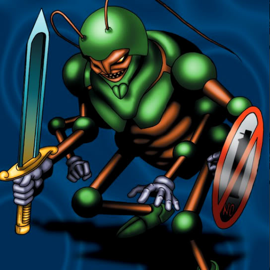

Cockroach Knight

STATS
ATK: 800
DEF: 900DECK COST
Deck Cost per Card: 17Fusion List (5 Possible Fusions)
- Cockroach Knight + Kattapillar = Larva of Moth
- Cockroach Knight + Larvae Moth = Larva of Moth
- Cockroach Knight + Milus Radiant = Nekogal #2
- Cockroach Knight + Needle Worm = Larva of Moth
- Cockroach Knight + Petit Moth = Larva of Moth